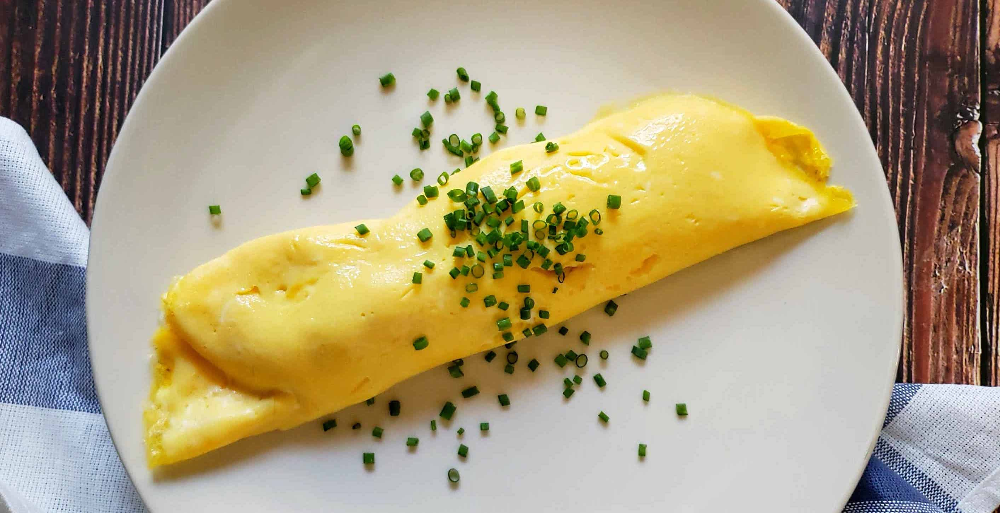

Just Frills.
The omlette, a plain and simple dish, is often viewed as the ultimate test of a Chef's culinary skill.
This plain, simple and seemingly pointless website, serves a similar function. Unlike the omlette, however, this website is not meant to be basic. On the contrary, it depicts all the fancy things I can do as a web developer right now. This is my best sauce, and its in a spoon for you to taste. No bread. No meat. Nothing to go with it.
Without any real content to distract you from my job(designing a beautiful webpage), it strives to be an example of what I can acheive solely as a web designer and developer.
As I grow my skills, I shall continually update "The Plan" to display what I beleive represents the most generic form of what I can design based on my personal preferences, with my current skill-set.